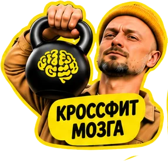
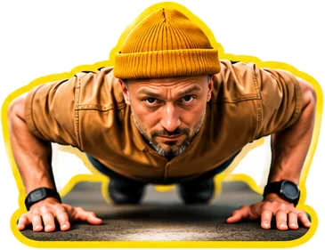

Твоя слабая мышца
Креатив — это не талант, а четыре мышцы. Когда идей нет, обычно проседает одна. Найдём твою и дадим план на 7 дней.

Нажми на мышцу, чтобы узнать, что это
Отвечай честно и первым, что пришло в голову. Правильных ответов нет.

Взвешиваю мышцы…
Считаю, где проседает
Все четыре мышцы
Нажми на мышцу, чтобы вспомнить, что она значит
Что происходит
Три упражнения для тебя
План на 7 дней
Отмечай дни тапом — прогресс сохранится на этом устройстве.
Прокачай все четыре мышцы
Напиши мне в нельзяграме @nikolay_lemmer слово КРЕАТИФФ — пришлю тетрадь прогресса на 30 дней: замер «до и после», трекер, бланки упражнений и банк идей.
Разборы креатива, съёмки и мышления — в Telegram-канале «А что дальше».
t.me/a_shto_dalsheЭто самодиагностика по модели из гайда «Креатив — это мышца», а не научный психологический тест. Модель собрана по книгам Намаконова, Рубина, Альтшуллера, Чиксентмихайи, Клеона, Линча и др.
Николай Леммер · @nikolay_lemmer